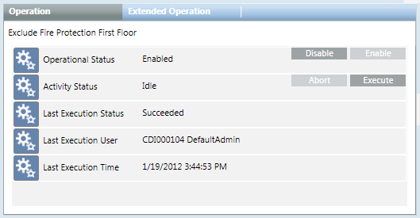

Properties and Commands of a Macro
When you select a macro object in System Browser, its properties and commands display in the Operation tab.

Property | Description | Commands |
Operational Status | Indicates whether the macro is enabled (meaning it is available to be run by the user):
|
For instructions, see Enabling or Disabling Macros. |
Activity Status | Indicates whether the macro is currently running, aborting, or not running:
|
|
Last Execution Status | Indicates the outcome the last time the macro was run:
| - |
Last Execution User | Name of the user who last executed the macro. | - |
Last Execution Time | Date and time when the macro was last executed. | - |

Disabling macros
When you disable a macro, the Desigo CC station generates an event. This event is automatically cleared when you re-enable the macro.
Do not disable any of the system macros (in the Backups or Block Command Macros folders), as this will prevent the system from properly executing the associated functions. If a macro is used in a reaction or other automated logic (schedule, and so on) then disabling the macro will result in a failure of the corresponding reaction/schedule. Also, if a macro is invoked by another macro (nested macros) then disabling it will result in a failure of the calling macro.